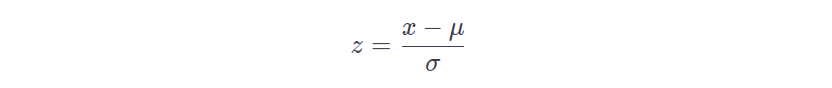
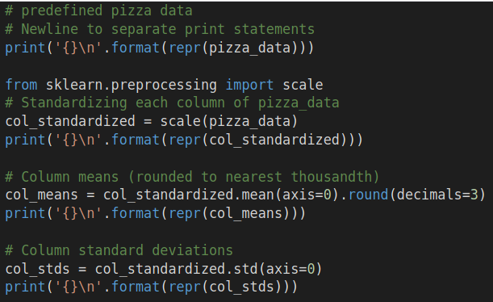
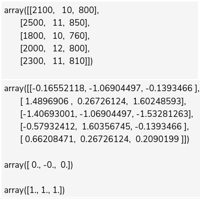
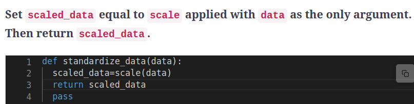

Standardizing Data
Chapter Goals:
• Learn about data standardization
~~~~~~~~~~~~~~~~~~~~~~~~~~~~~~~~~
Standard data format
Data can contain all sorts of different values. For example, Olympic 100m sprint times will range from 9.5 to 10.5 seconds, while calorie counts in large pepperoni pizzas can range from 1500 to 3000 calories. Even data measuring the exact same quantities can range in value (e.g. weight in kilograms vs. weight in pounds).
When data can take on any range of values, it makes it difficult to interpret. Therefore, data scientists will convert the data into a standard format to make it easier to understand. The standard format refers to data that has 0 mean and unit variance (i.e. standard deviation = 1), and the process of converting data into this format is called
data standardization.
Data standardization is a relatively simple process. For each data value,
x, we subtract the overall mean of the data, μ, then divide by the overall standard deviation, σ. The new value,
z, represents the standardized data value. Thus, the formula for data standardization is:

~~~~~~~~~~~~~~~~~~~~~~~~~~~~~~~~
NumPy and scikit-learn
For most scikit-learn functions, the input data comes in the form of a NumPy array.
Note: The array’s rows represent individual data observations, while each column represents a particular feature of the data, i.e. the same format as a spreadsheet data table.
The scikit-learn data preprocessing module is called
sklearn.preprocessing. One of the functions in this module,
scale, applies data standardization to a given axis of a NumPy array.
 
We normally standardize the data independently across each feature of the data array. This way, we can see how many standard deviations a particular observation's feature value is from the mean.
For example, the second data observation in
pizza_data has a net weight of 1.6 standard deviations above the mean pizza weight in the dataset.
If for some reason we need to standardize the data across rows, rather than columns, we can set the
axis keyword argument in the
scale function to 1. This may be the case when analyzing data within observations, rather than within a feature. An example of this would be analyzing a particular student's test scores in terms of standard deviations from that student's average test score.
